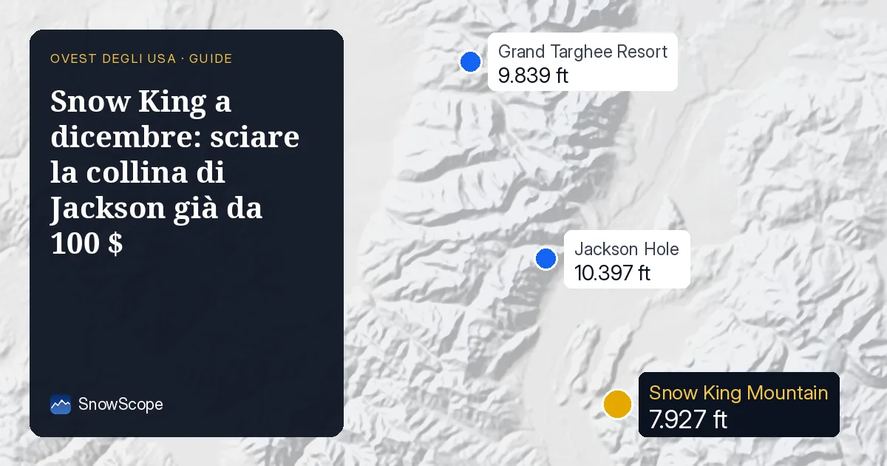

Snow King a dicembre: sciare la collina di Jackson già da 100 $
Jackson è una delle località sciistiche più costose del paese. Snow King è la via d'uscita: una collina cittadina ripida raggiungibile a piedi dalla piazza, con skipass adulti a partire da 100 $ e una neve di dicembre che, secondo la nostra storia, è di solito già presente a metà mese.
Le previsioni neve in tempo reale per Snow King Mountain nell'app SnowScopeAltezza neve, allerte powder e mappa 3D, gratis.
Una montagna da sci in fondo alla strada
Snow King sorge proprio sopra Jackson. Secondo la nostra mappatura conta 9 impianti e circa 11 mi (18 km) di piste, da circa 6.240 ft (1.902 m) a 7.930 ft (2.416 m). È piccola e ripida, e dà la sensazione di essere la collina dei locali in una valle famosa.

La neve a dicembre
La neve duratura arriva a mezza montagna, intorno a 7.080 ft (2.159 m), a metà ottobre in un inverno tipico della nostra serie storica. Il 1° dicembre lo spessore tipico lì è di 19 in (49 cm); il 15 dicembre, di 28 in (71 cm); il giorno di Natale, di 34 in (86 cm). In vetta c'erano 34 in (87 cm) in un tipico 15 dicembre.
Le probabilità sono buone: il 15 dicembre, l'87 % degli inverni aveva almeno 20 in (50 cm) a mezza montagna e il 98 % in vetta. Un dicembre scarso (uno su dieci) aveva comunque 19 in (49 cm) a mezza montagna in quella data. Il punto debole è la base, con 21 in (54 cm) in un inverno tipico.

Il prezzo, e lo skipass stagionale
Lo store online di Snow King indica lo skipass giornaliero adulti (15-64 anni) a partire da 100 $. È un prezzo 'a partire da', quindi nelle date di punta aspettatevi cifre più alte.
Snow King fa parte anche dell'Indy Pass. L'Indy Base Pass costa 419 $ per gli adulti e l'Indy+ Pass, senza date di blackout, 469 $; entrambi danno due giorni in ogni stazione partner.
Accanto a Grand Targhee e Jackson Hole
Grand Targhee, oltre il Teton Pass sul lato Idaho, ha molta più neve: 46 in (118 cm) a mezza montagna in un tipico 15 dicembre, e in ciascuno dei nostri 46 inverni c'erano almeno 20 in a quella data. Il suo skipass giornaliero online varia da 125 $ a 180 $ a seconda della data.
Jackson Hole, il grande resort più a monte nella valle, secondo i nostri dati aveva 37 in (93 cm) a mezza montagna in un tipico 15 dicembre; non abbiamo confrontato il suo prezzo. Per una giornata economica in città, Snow King è la porta più economica per sciare nei Teton; per una giornata di powder garantita, vale la pena guidare fino a Targhee.
Prima e ora
A mezza montagna si è persa un po' di neve di inizio stagione: 35 in (88 cm) in un tipico 15 dicembre nei primi 15 inverni della nostra serie storica, contro 27 in (69 cm) negli ultimi 15, con la quota sopra i 20 in scesa dal 100 % all'80 %. Lo scorso inverno c'erano 17 in (44 cm) in quella data.
Consigli per sciatori
- Alloggiate a Jackson e andate a piedi fino all'impianto: risparmiate su parcheggio e spostamenti.
- Abbinate una giornata a Snow King a una a Targhee per un weekend lungo più economico e più nevoso di una settimana intera nel grande resort.
- Il Teton Pass è ripido e chiude durante le tempeste: controllate lo stato della strada prima di guidare verso Targhee.
- Snow King è esposta a nord sopra la città ed è ripida: le mattine ghiacciate sono comuni a inizio stagione.
Riferimenti e crediti
- Snow King Mountain, winter day tickets (official store) store.snowkingmountain.com/en/catalogue/category/500-winter-lift-tickets/510-day-ticket_447/
- Indy Pass, shop 2026-27 (official) www.indyskipass.com/shop
- Grand Targhee, winter lift tickets 2026-27 (official) www.grandtarghee.com/tickets-passes/lift-tickets/winter-lift-tickets
- OpenSkiMap (mapped lifts and runs) openskimap.org/
- avalanche.org, US avalanche centers and forecasts avalanche.org/
Su questi numeri
Numeri della neve: storico neve SnowScope, 46 inverni passati (1980-81 - 2025-26) alle quote indicate (base, metà, vetta), una ricostruzione della neve passata per un'area corretta per la quota (basata su ERA5-Land; Snow_Hydro 1 km per il Marocco), non i bollettini della località. Neve attuale: la mappa SnowScope. Impianti, piste e quote: mappatura OpenSkiMap. Prezzi: le pagine ufficiali elencate qui sotto, lette il 13 novembre 2026; i prezzi dinamici cambiano con la data e la domanda.
Bollettini valanghe ufficiali: Bridger-Teton Avalanche Center
Cita questo articolo
Per ricerca, didattica o stampa: numeri e grafici sono liberamente riutilizzabili con licenza CC BY 4.0 citando così.
SnowScope (2026), Snow King a dicembre: sciare la collina di Jackson già da 100 $, https://snowscope.app/blog/it/2026/11/snow-king-jackson-december-budget-skiing.html, consultato il 2026-11-14
SnowScope (Atlas Labs). (2026, November 14). Snow King a dicembre: sciare la collina di Jackson già da 100 $. SnowScope snow reports. https://snowscope.app/blog/it/2026/11/snow-king-jackson-december-budget-skiing.html
BibTeX
@misc{snowscope2026snowkingjacksondecemberb,
author = {{SnowScope (Atlas Labs)}},
title = {Snow King a dicembre: sciare la collina di Jackson già da 100 $},
year = {2026},
month = nov,
howpublished = {\url{https://snowscope.app/blog/it/2026/11/snow-king-jackson-december-budget-skiing.html}},
note = {Published 2026-11-14 19:27 UTC; accessed 2026-11-14}
}· CC BY 4.0 · Metodi, dati e strumenti →
Snow King Mountain: neve e temperatura per quota, quest'inverno vs lo scorso (strumenti) →
Segui Snow King Mountain
Gratis: un messaggio quando arriva la neve e il meteo ogni mattina.